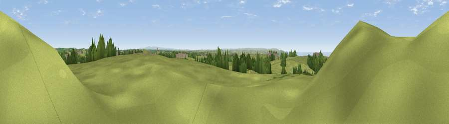

Viewpoint near Bush
#18117 in England · top 36% of its area beats it · near BushThe view, rendered

A 360° render of this exact spot computed from the terrain model, tree cover and land cover — summer colours, afternoon light, calibrated against photographs of famous viewpoints. Real trees, hedges and buildings will differ in detail.
The panorama
Grey silhouette: terrain skyline in each direction (720 bearings, Earth curvature and refraction included). Dashed green: skyline with trees (+15 m) and buildings (+8 m) as obstacles. Blue strip: how far the ground is visible on each bearing.
Where the view opens
Wedge length = distance to the farthest visible ground on that bearing (vegetation-aware). Rings at 10, 25 and 50 km.
What fills the view
80% grassland · 13% woodland · 3% water · 2% cropland · 1% built-up
Angular shares of the visible panorama (visual magnitude), not map area. Landscape diversity 0.30 (0–1 Shannon).
Key numbers
More beautiful places nearby
The staircase of upgrades: each row has a higher view potential than everything closer. Driving times are estimates from straight-line distance, calibrated against real road routing — check an actual route before setting out.
| Place | Direction | Drive | Score |
|---|---|---|---|
| Viewpoint near Bush | SSW · 1 km | ~3 min | 65.0 |
| Viewpoint near Poughill | WNW · 3 km | ~8 min | 73.3 |
| Viewpoint near Poughill | WNW · 4 km | ~10 min | 74.0 |
| Viewpoint near Morwenstow | NW · 7 km | ~14 min | 74.5 |
| Viewpoint near Morwenstow | NW · 8 km | ~16 min | 75.4 |
| Viewpoint near Morwenstow | NW · 8 km | ~17 min | 77.9 |
| Viewpoint near Poundstock | SW · 11 km | ~21 min | 79.7 |
| Embury Beacon | NNW · 12 km | ~23 min | 83.8 |
50.84317, -4.47745 · source: screening · position refined by local search. Computed location — check access rights before visiting.